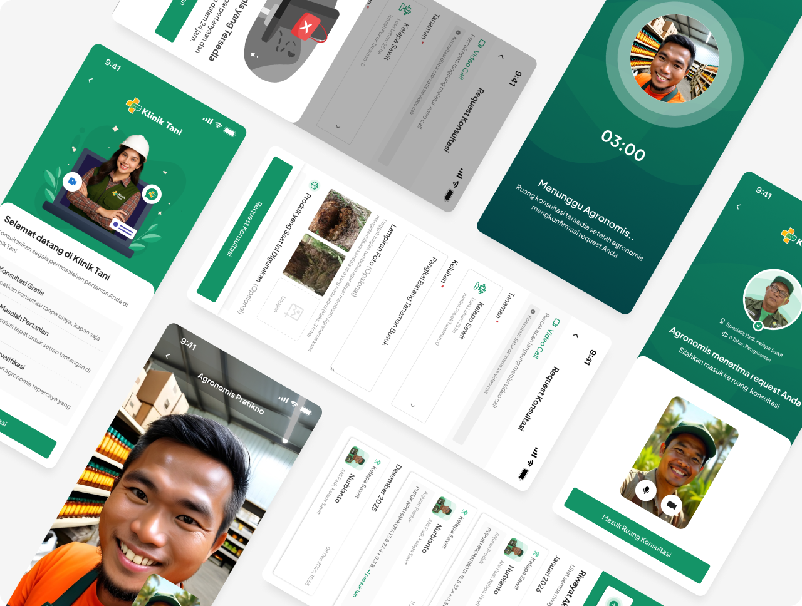
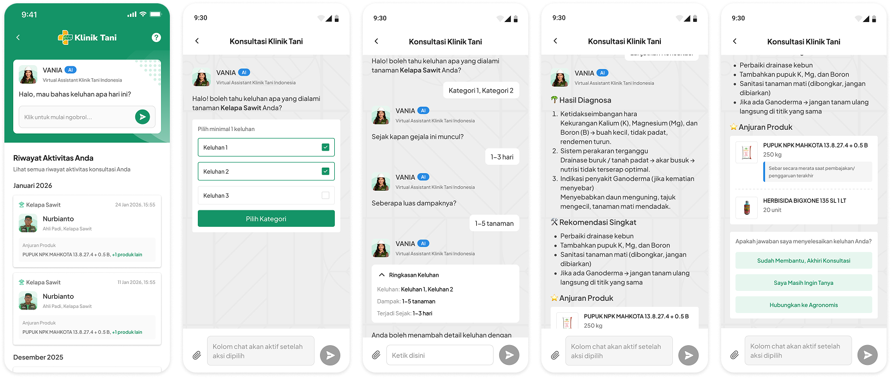

Klinik Tani: A Digital Consultation Channel for Indonesian Farmers

Context
Farmers face a wide range of problems in the field every day, from pest infestations to suboptimal crop productivity. Their main source of answers has traditionally been their local farming groups, but the results and satisfaction with that advice were often inadequate.
Access to professional agronomists is also limited, as only large agribusiness companies can afford a dedicated agronomist.
Field research reinforced this need. Interestingly, farmers' core problem was rarely about which product to buy, since fertilizer and pesticides are already routine purchases they know well. What was often missing was guidance on the right dosage and application method for their specific field conditions.
From this, Gokomodo saw an opportunity to address two needs at once: genuinely helping farmers optimize how they use products they already buy, while turning the consultation moment into an opportunity to direct that purchase to Gokomart.
Process and Research
Field research was conducted using surveys and interviews during a farmers gathering event. The survey reached 388 participants, while in-depth interviews were held with 10 farming group leaders.
The research surfaced three recurring problems among farmers:
These consistently came up as the most common issues farmers struggled to resolve on their own or through their farming group.
Interviews specifically targeted farming group leaders rather than individual farmers, since leaders are regularly approached by their members with a wide range of field problems. This gave the team a faster way to surface recurring patterns across many farmers through fewer conversations, rather than needing a much larger number of individual interviews to reach the same breadth of insight.
From this research, two core needs were identified:
Farmers needed access to credible agronomist expertise, not just opinions from fellow farmers
The business needed a way to turn the moment a farmer has a problem into a relevant product opportunity, rather than hard selling
Pivot and Trade-offs
Limited Agronomist Supply vs Nationwide Farmer Demand
The number of available agronomists is far smaller than the spread of farmers who need consultations, and demand cannot always be served in real time via video call.
Trade-off: Rather than limiting access to only the farmers lucky enough to get a video call slot, consultation forms are still accepted as demand even when no agronomist is available. Agronomists then respond with a diagnosis asynchronously, without requiring a real-time session. This trades away the instant experience to make sure no farmer's issue goes unaddressed simply due to limited supply.
Unstable Connectivity in Rural Areas
Video call as the primary consultation channel faces a real challenge: many farming regions have unstable internet connectivity.
Trade-off: When the connection drops mid-consultation, the system is designed so the process doesn't fail entirely. The agronomist switches to delivering the diagnosis via text instead. This decision prioritizes resolving the farmer's problem over the quality of the communication medium, acknowledging that field infrastructure can't be assumed to be as consistent as it is in major cities.

Result from 2024-2025
Consultation Volume
1149 total consultations from 710 unique customers
Business Impact
94% conversion
from consultation to product purchase
2.4% revenue contribution
from Gokomart's total revenue
Product Evolution Note
In mid 2026, Klinik Tani introduced AI powered chat consultation as the first layer of the consultation flow, replacing the earlier process that connected farmers directly to a human agronomist. Farmers now start their consultation with AI first. If the result isn't satisfactory, the system connects them to a human agronomist for further support.

This layered approach addresses the agronomist supply challenge identified early on. AI absorbs most of the consultation volume for relatively common cases, while human agronomists can focus on more complex ones. As with the previous flow, consultations still end with a relevant product recommendation, preserving Klinik Tani's dual purpose in this new channel.
Trade-off: current AI model isn't yet able to handle complex questions well, so escalation to a human agronomist remains necessary as a fallback whenever a farmer finds the AI chat experience unsatisfactory. This is a deliberate decision not to fully replace human agronomists. AI is positioned as a first line filter for efficiency, not a total replacement, since farmers' trust in diagnosis quality remains the top priority.